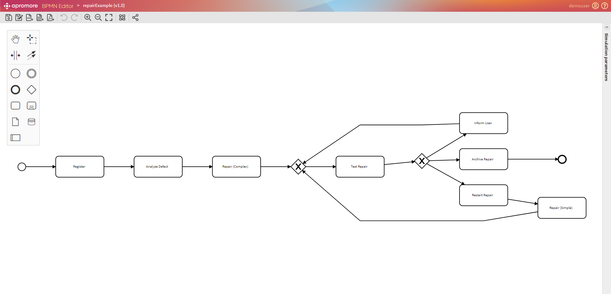
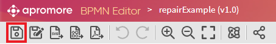
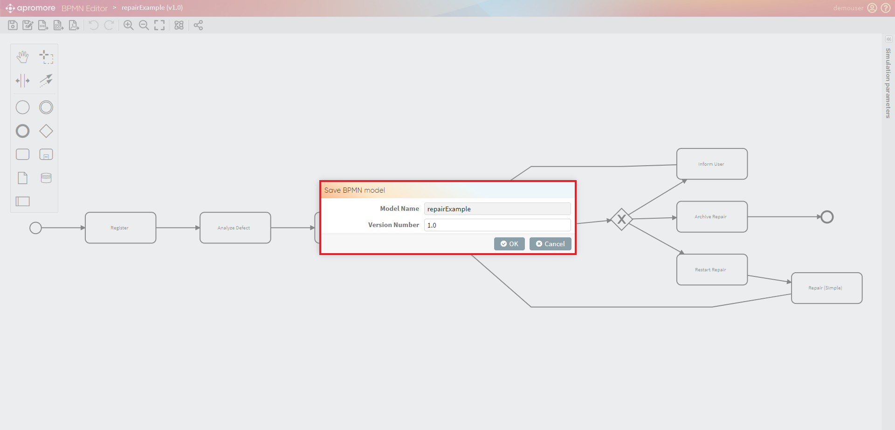
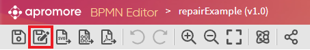
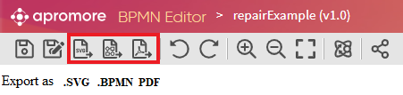
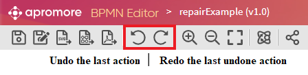
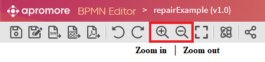
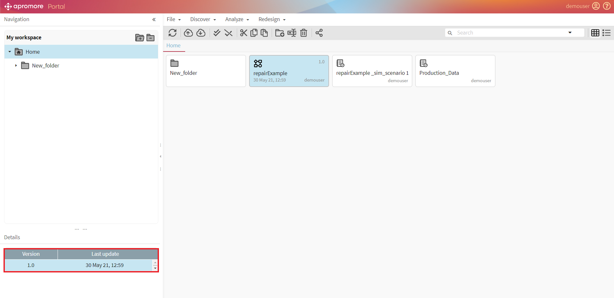

Create/edit process model
The editor allows one to edit, save, and export (BPMN) process models. To access the editor, double click on the process model you want to edit in the repository browser. The image below shows a snapshot of the editor environment. On the left, the palette containing the BPMN elements. To add any of these elements to the process model, drag-and-drop it on the desired location.

Save model
At the top of the editor, a menu shows the icons of the essential functionalities provided within the editor. The first icon starting from the left, allows us to save the model.

When selected this option, the following message-box appears.

We can choose the version number of the process and the branch (folder) to save it. Each process version is kept in the memory, and it is possible to retrieve any of it at any time (more details on how to access the older versions of a process model come below).
Save a copy of a model
If we want to save a copy of the process model, we can click on the menu’s second icon, as shown below.

Save a copy allows us to duplicate the process model in the repository, rename it, and restart the version counter from 1.0.
Export model
The third icon exports the process model in the format .SVG. The fourth and fifth icons export the process model in the formats.BPMN and PDF (respectively), as pictured below.

Note
Remember to allow pop-up windows before exporting the process, otherwise, the export may fail.
Undo/Redo
The next two icons allow to undo and redo changes applied to the process model.

Zoom-in/Zoom-out
Finally, the two zoom lenses allow to zoom-in and zoom-out.

Access an older version of a process model
To access older versions of a process model, select the process model in the repository browser. Please select the version we want to edit from the tab on the left bottom corner (as highlighted in the screenshot), and either double-click on it or hit the File -> Edit Model.
